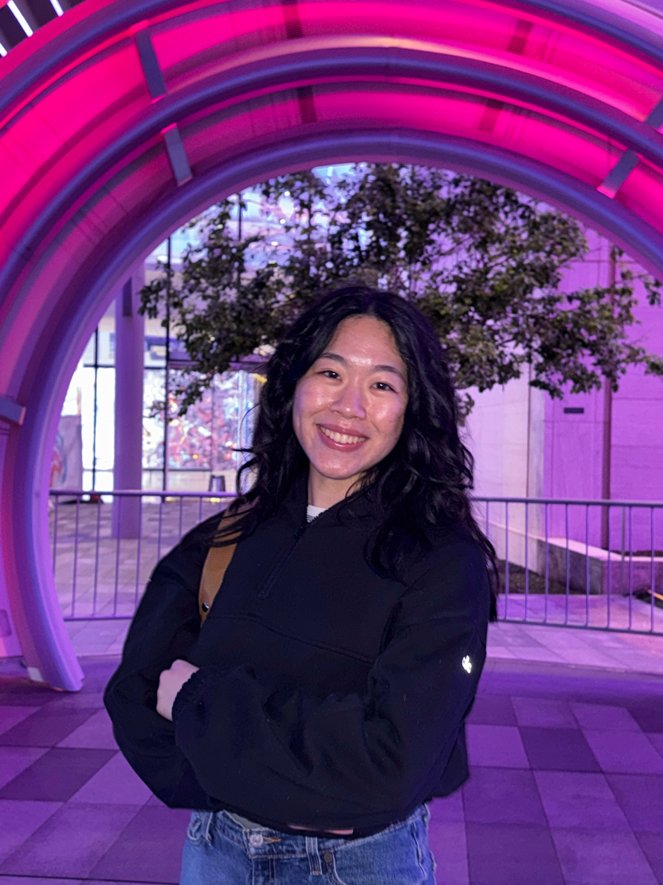

Hi, I am Ada.
I am a marketing and communications professional based in the Dallas-Fort Worth area with a B.S. in Marketing from The University of Texas at Dallas. My experience includes communications strategy, website management, email marketing, stakeholder communications, community engagement, analytics reporting, and event promotion.
In my current role as Director of Communications & Marketing, I serve as the sole communications lead for a multi-audience organization. I manage end-to-end communications across web, email, social media, and print, ensuring messaging is consistent, accessible, and aligned with organizational goals. I also track engagement metrics to evaluate communication effectiveness and guide outreach strategy.
I enjoy combining creative communication with data-driven decision-making to improve engagement and strengthen connections between organizations and their audiences.
Sacred Heart Catholic Parish
A selection of communications, digital strategy, and UX-focused projects across parish leadership, campaign development, and stakeholder communications.
Led ongoing improvements to a multi-audience parish website, focusing on usability, content clarity, and access to high-traffic information such as Mass times, events, and ministries.
Developed the full communication structure and presentation framework for a parish-wide town hall delivered by leadership, synthesizing input from multiple departments and stakeholders.
Developed a full marketing strategy for a Spanish-language podcast initiative focused on digital evangelization, audience growth, and content distribution strategy.
📧 Email: adasliang@outlook.com
📍 Plano, TX
🔗 LinkedIn: linkedin.com/in/ada-liang